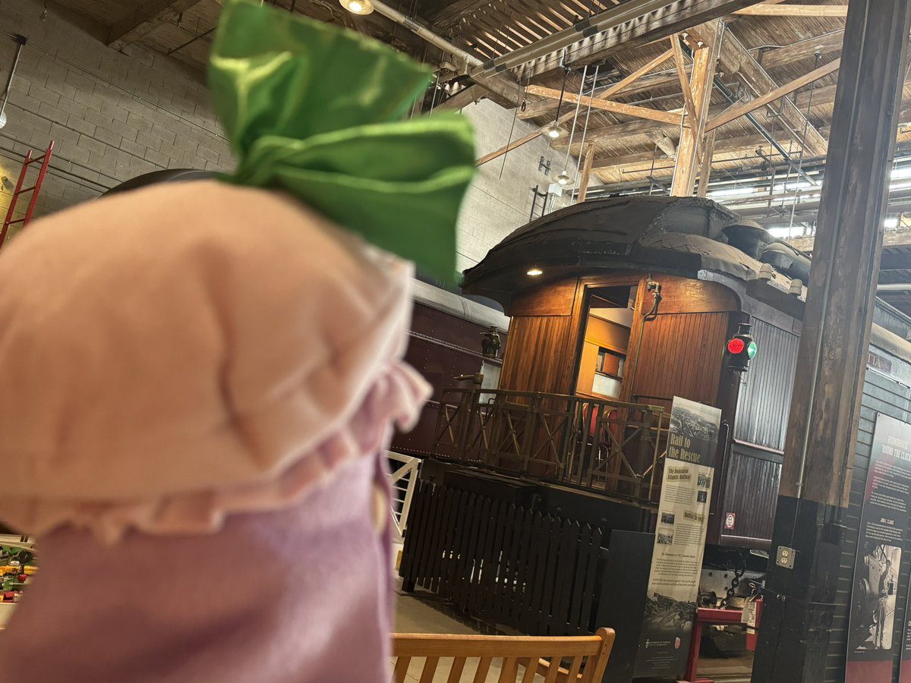
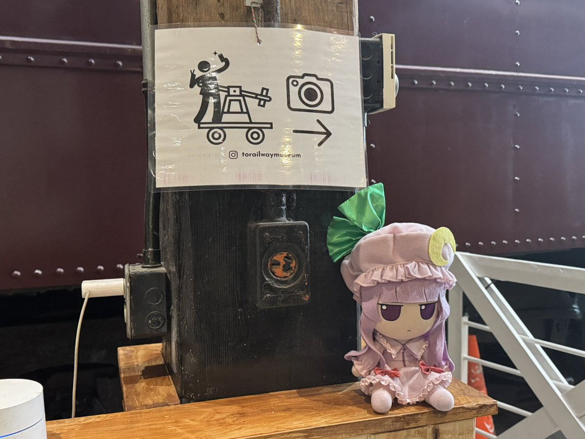
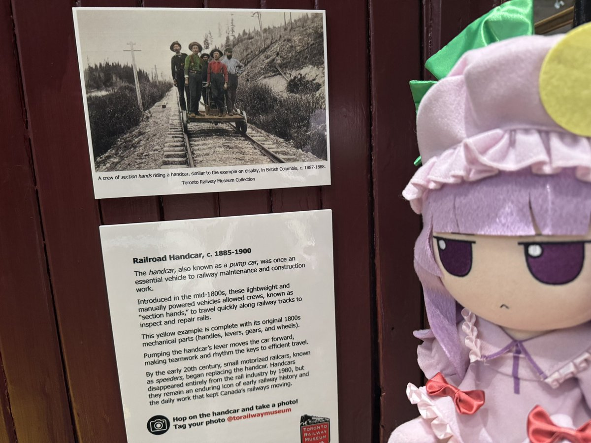

帕秋莉殿下的一日游／车／
正在鉴赏经过Union站进进出出的，包括但不限于It's MyGO的各种列车。
说起来，有一个题外话，我环顾四周竟然看到一个楼上挂着Citi标，查了才知道花旗原来在加拿大是有业务的，只不过基本都是私行和对公的，曾经有过对私的信用卡业务但后来卖给CIBC了。
终于要回家躺平了呢。

正在鉴赏经过Union站进进出出的，包括但不限于It's MyGO的各种列车。
说起来，有一个题外话，我环顾四周竟然看到一个楼上挂着Citi标，查了才知道花旗原来在加拿大是有业务的，只不过基本都是私行和对公的，曾经有过对私的信用卡业务但后来卖给CIBC了。
终于要回家躺平了呢。



帕秋莉殿下的一日游／览／
参观了多伦多铁路博物馆。
有点累了吗……那坐上手摇车的握把稍微歇息一下吧。（呼……）
博物馆是一个小小的大屋子，有一种麻雀虽小五脏俱全的感觉。
希望多有些人来参观，有点怕没收入又缺拨款给倒闭了。 https://t.co/x3GVqsO3ge
参观了多伦多铁路博物馆。
有点累了吗……那坐上手摇车的握把稍微歇息一下吧。（呼……）
博物馆是一个小小的大屋子，有一种麻雀虽小五脏俱全的感觉。
希望多有些人来参观，有点怕没收入又缺拨款给倒闭了。 https://t.co/x3GVqsO3ge